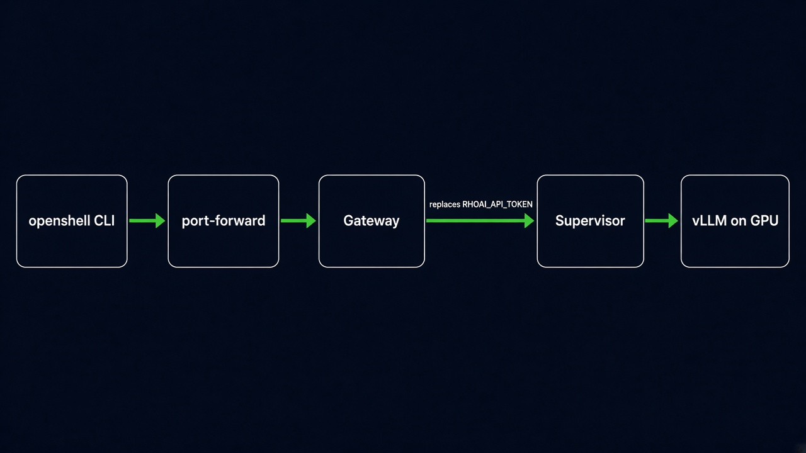

Granite 3.3 2B on one NVIDIA GPU, the OpenShell 0.1.8 gateway without the privileged SCC, and a sandbox that only sees the placeholder RHOAI_API_TOKEN. The long form is openshift-ai.md. This module was not applied from the machine that ran the local path.

The supervisor substitutes the real token only for the host and port in the profile.
Piece
Version
OpenShift
4.19 or later (Landlock)
OpenShift AI
3.x, single-model KServe
OpenShell chart
0.1.8
vllm-kserve
0.7.1
Model
granite-3.3-2b-instruct
Agent Sandbox
v1.0.10 sandbox.yaml
1Serve the model
You need cluster-admin, Helm 3, the model-serving platform, and the GPU Operator. Confirm hardwareProfilenvidia-gpu-serving in redhat-ods-applications.
Chart 0.7.1 annotates auth on. Read MODEL_HOST and MODEL_PORT from the Service. A headless Service uses targetPort 8080. Put those values in deploy/rhoai-granite.profile.yaml before import. Do not print the token.
deploy/openshift-scc-values.yaml clears podSecurityContext and runAsUser. --set those keys to null leaves the chart default UID 1000, and restricted-v2 rejects it.
3CLI, mTLS, provider
Port-forward svc/openshell8080:8080. Copy openshell-client-tls into ~/.config/openshell/gateways/openshift/mtls/. Then:
model-check uses ubi9/toolbox and /usr/bin/curl. hello-agent uses ubi9/python-312 and /opt/app-root/bin/python3. The shell expands MODEL_HOST. \${RHOAI_API_TOKEN} stays literal until the sandbox shell runs. Every command is in openshift-ai.md.